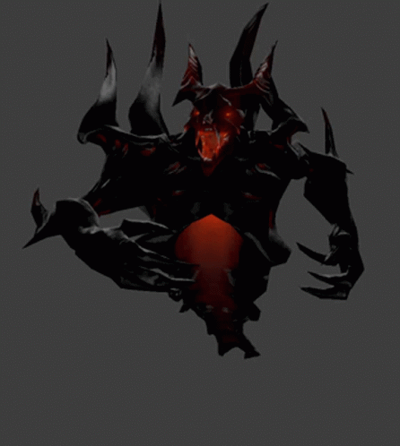

Dead Inside
кодекс dead inside гуля
1. ты не клоун. если ты ставишь себе на аву гуля, спамишь zxczxczcxczcxzxc, ставишь паузы после каждого кила без причин и просто позер - то это не значит, что ты гуль, и права называть себя им не имеешь
2. тебе должно быть пoxyй. ты аморал, без нравственных качеств. тебя послали нaxyй, сказали что ты бездарь? не позорься, не оправдывайся, не отвечай, хочешь доказать - докажи на деле, уничтожь в zxc, ты не терпила, ты не тратишь свое время. ты обещал разбить вещи? бей их, встань в амулет, отвечай за слова
3. не выeбывaйcя. у тебя 3к птс и ты пuздuшь что смурф? закрой рот, это твой ммр, ты играешь на победу и не присваивай себе заслуг, которых не добился. тебе никто ничего не обязан и ты тоже. если ты ломаешь вещи из за того, что тебе не пикнули саппорта - ты нытик, ты не гуль
4. каждый гуль должен хотя бы знать что такое zxc, а тем более уметь там постоять за себя. если для мужчин нормальна случайность обменяться кулаками с другим мужчиной, то так же норма для гуля ответить или заставить ответить за слова в zxc. не будь тряпкой, ты сильнее
5. сосредотачивайся на игре, zitraks mod. твоя главная цель победить, ты должен уметь давать all mute, справляться с тильтом и выигрывать непобедимое. враги должны бояться гулей, а не смеяться с рейдж бб нытика
6. если ты достоин называться гулем, то ты априоре ставишь себя выше остальных. если ты уверен в себе, то забирай роль, фпшь героя, твоя игра - твои правила, но не руинь, пока не заруинили тебе. пикнули дабл мид? иди на сфе в лес и тащи соло, не забудь поставить паузу при смерти yeбaнa и потапать на него, насмехайся над ними, но не становись посмешищем, выигрывай все игры, если команда сама не захотела или не заслужила поражения, выбор твой
7. all chat для тебя не существует, зачем тебе писать врагам что то, кроме "?" после убийств и ")" после падения трона?
8. убил мидера на фб? f9 + ?. у врага падает трон? ")" в all chat, но не больше, ты не clown.
9. гули нормальные, ты не токсик свинья и позер, ты нормальный, порофли с тимой если хочешь, хорошо общайся со своими ребятами если нужно, уважай тех, кто действительно этого достоин.
10. ЧСВ - положительное качество, ты сильнее и лучше всех, НО ты должен это оправдывать
11. будь верен своим идеалам. тебе не обязательно иметь гуля на аве, к чему это, поставь лил пипа или гослинга если хочешь, держись идеалов, но твой ник не должен быть отвратительным
12. никогда не пиши заглавными буквами. пиши размеренно и по правилам, не будь быдлом, ведь это низко
13. запомни в последний раз, ты не клоун, не позер и не нытик. ты - гуль, не позорься и не строй из себя не пойми что
14. соблюдай все правила, либо ты не гуль

 Анонимусы снова атакуют
Анонимусы снова атакуют